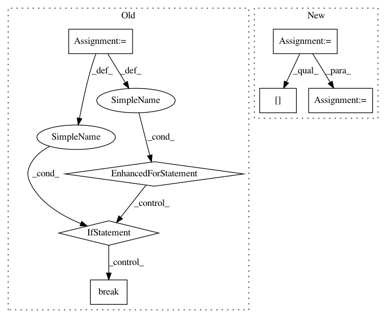

a23afcd39cc364f17e1adefc1a4309e99c4a3d7d,auto_ml/utils_model_training.py,FinalModelATC,predict_uncertainty,#FinalModelATC#Any#,341
Before Change
calibration_results[key] = []
for proba in results["uncertainty_prediction"]:
for bucket_name, bucket_result in self.uc_results.items():
if proba > bucket_result["max_proba"]:
break
calibration_result = bucket_result
for key, value in calibration_result.items():
calibration_results[key].append(value)
// TODO: grab the uncertainty_calibration data for DataFrames
df_calibration_results = pd.DataFrame.from_dict(calibration_results, orient="columns")
After Change
for proba in results["uncertainty_prediction"]:
max_bucket_proba = 0
bucket_num = 1
while proba > max_bucket_proba:
calibration_result = self.uc_results[bucket_num]
max_bucket_proba = self.uc_results[bucket_num]["max_proba"]
bucket_num += 1
for key, value in calibration_result.items():
calibration_results[key].append(value)
In pattern: SUPERPATTERN
Frequency: 3
Non-data size: 7
Instances
Project Name: ClimbsRocks/auto_ml
Commit Name: a23afcd39cc364f17e1adefc1a4309e99c4a3d7d
Time: 2017-05-19
Author: ClimbsBytes@gmail.com
File Name: auto_ml/utils_model_training.py
Class Name: FinalModelATC
Method Name: predict_uncertainty
Project Name: OpenNMT/OpenNMT-py
Commit Name: 63871d5ab3301d015805abddd8f4259680d6a24a
Time: 2017-09-21
Author: bpeters@coli.uni-saarland.de
File Name: translate.py
Class Name:
Method Name: main
Project Name: OpenNMT/OpenNMT-py
Commit Name: 13bbee615c87c812ddcfff73746cd504222e3fb0
Time: 2017-08-30
Author: nasa4836@gmail.com
File Name: onmt/Models.py
Class Name:
Method Name: make_base_model